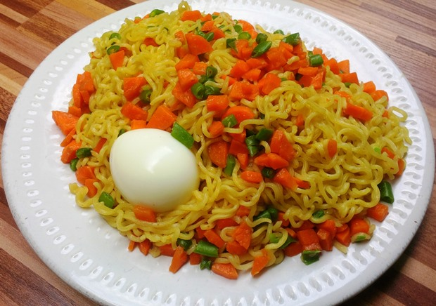

Indomie Noodles Recipe

Description
Here is how to make indomie noodles
This noodle is packed with all the necessary ingredients that are needed for preparing it. But I just like to add either all or some of the ingredients listed below.
Ingredients
- 2 eggs
- 1 cup of diced carrots
- 1/2 Cup Chopped Green bean
- 200g Indomie noodles
- 1/2 Cup Chopped Green bean
Steps
- Set a pot on heat, add two cups of water and allow to boil
- Dice the carrots and chop the green bean
- Boil eggs separately, deshell and set aside.
- In the pot with boiling water, combine noodles, carrots, and green beans
- Allow cooking for 3 minutes, add the follow come spices, allow another minute
- Stir together and serve with the boiled eggs